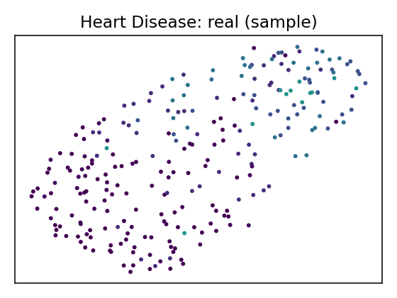

Data Report — Heart Disease (UCI id 45)
4 databases: Cleveland, Hungary, Switzerland, and the VA Long Beach
Source: UCI dataset 45
SemMap JSON-LD: dataset.semmap.json · RDFa HTML
Overview
| Metric | Value |
|---|---|
| Dataset | Heart Disease (UCI id 45) |
| Source | UCI dataset 45 |
| Rows | 297 |
| Columns | 14 |
| Discrete | 9 |
| Continuous | 5 |
| SemMap | SemMap JSON-LD SemMap HTML |
| Missingness | Not modeled |
Variables and summary
| variable | inferred | dist |
|---|---|---|
| age | continuous | 54.5421 ± 9.0497 [29, 48, 56, 61, 77] |
| sex | discrete | male [1]: 201 (67.68%) |
| cp | discrete | Asymptomatic [4]: 142 (47.81%) Non-cardiac chest pain [3]: 83 (27.95%) Atypical angina [2]: 49 (16.50%) Typical angina [1]: 23 (7.74%) |
| trestbps | continuous | 131.6936 ± 17.7628 [94, 120, 130, 140, 200] |
| chol | continuous | 247.3502 ± 51.9976 [126, 211, 243, 276, 564] |
| fbs | discrete | >120 mg/dL [1]: 43 (14.48%) |
| restecg | discrete | normal [0]: 147 (49.49%) LVH (Estes) [2]: 146 (49.16%) ST-T abnormality [1]: 4 (1.35%) |
| thalach | continuous | 149.5993 ± 22.9416 [71, 133, 153, 166, 202] |
| exang | discrete | yes [1]: 97 (32.66%) |
| oldpeak | continuous | 1.0556 ± 1.1661 [0, 0, 0.8, 1.6, 6.2] |
| slope | discrete | upsloping [1]: 139 (46.80%) flat [2]: 137 (46.13%) downsloping [3]: 21 (7.07%) |
| ca | discrete | 0: 174 (58.59%) 1: 65 (21.89%) 2: 38 (12.79%) 3: 20 (6.73%) |
| thal | discrete | normal [3]: 164 (55.22%) reversible defect [7]: 115 (38.72%) fixed defect [6]: 18 (6.06%) |
| num | discrete | <50% narrowing [0]: 160 (53.87%) ≥50% narrowing [1]: 54 (18.18%) 2: 35 (11.78%) 3: 35 (11.78%) 4: 13 (4.38%) |
Fidelity summary
| umap | model | backend | disc jsd mean | disc jsd median | cont ks mean | cont w1 mean | downstream sign match |
|---|---|---|---|---|---|---|---|
| metasyn | metasyn | 0.1149 | 0.1208 | 0.1683 | 3.5644 | 0.6316 | |
| clg_mi2 | pybnesian | 0.1002 | 0.0941 | 0.1604 | 4.7232 | ||
| semi_mi5 | pybnesian | 0.1002 | 0.0941 | 0.1604 | 4.7232 | ||
| ctgan_fast | synthcity | 0.4027 | 0.3651 | 0.8823 | 43.3414 | ||
| tvae_quick | synthcity | 0.1058 | 0.1173 | 0.2518 | 8.402 |
Privacy summary
| model | backend | n real | n synth | exact overlap rate | near duplicate rate eps | nn distance mean | k min | k pct lt5 | k map | rare qi reproduction rate | identifiability score | delta presence |
|---|---|---|---|---|---|---|---|---|---|---|---|---|
| metasyn | metasyn | 297 | 303 | 0 | 0.9966 | 0.0587 | 1 | 1 | 2 | 0 | 2 | |
| clg_mi2 | pybnesian | 297 | 303 | 0 | 0.9865 | 0.0658 | 1 | 1 | 8 | 0 | 2.75 | |
| semi_mi5 | pybnesian | 297 | 303 | 0 | 0.9865 | 0.0658 | 1 | 1 | 8 | 0 | 2.75 | |
| ctgan_fast | synthcity | 297 | 256 | 0 | 0.1719 | 0.3699 | 1 | 1 | 5 | 0 | 2.2 | |
| tvae_quick | synthcity | 297 | 256 | 0 | 0.6641 | 0.1902 | 1 | 1 | 1 | 0 | 17 |
Models
| UMAP | Details | Structure | |||||||||||||||||||||||||||||||||||||||||||||||||||||||||||||||||||||||||||||||||||||||||||||||||||||||||||||||||||
|---|---|---|---|---|---|---|---|---|---|---|---|---|---|---|---|---|---|---|---|---|---|---|---|---|---|---|---|---|---|---|---|---|---|---|---|---|---|---|---|---|---|---|---|---|---|---|---|---|---|---|---|---|---|---|---|---|---|---|---|---|---|---|---|---|---|---|---|---|---|---|---|---|---|---|---|---|---|---|---|---|---|---|---|---|---|---|---|---|---|---|---|---|---|---|---|---|---|---|---|---|---|---|---|---|---|---|---|---|---|---|---|---|---|---|---|---|---|
 |
Real data | ||||||||||||||||||||||||||||||||||||||||||||||||||||||||||||||||||||||||||||||||||||||||||||||||||||||||||||||||||||
 |
Model: metasyn (metasyn)
Per-variable fidelity
Downstream metrics
Privacy metrics
|
| |||||||||||||||||||||||||||||||||||||||||||||||||||||||||||||||||||||||||||||||||||||||||||||||||||||||||||||||||||
 |
Model: clg_mi2 (pybnesian)
Per-variable fidelity
Privacy metrics
|
 | |||||||||||||||||||||||||||||||||||||||||||||||||||||||||||||||||||||||||||||||||||||||||||||||||||||||||||||||||||
 |
Model: semi_mi5 (pybnesian)
Per-variable fidelity
Privacy metrics
|
 | |||||||||||||||||||||||||||||||||||||||||||||||||||||||||||||||||||||||||||||||||||||||||||||||||||||||||||||||||||
 |
Model: ctgan_fast (synthcity)
Per-variable fidelity
Privacy metrics
|
 | |||||||||||||||||||||||||||||||||||||||||||||||||||||||||||||||||||||||||||||||||||||||||||||||||||||||||||||||||||
 |
Model: tvae_quick (synthcity)
Per-variable fidelity
Privacy metrics
|
|